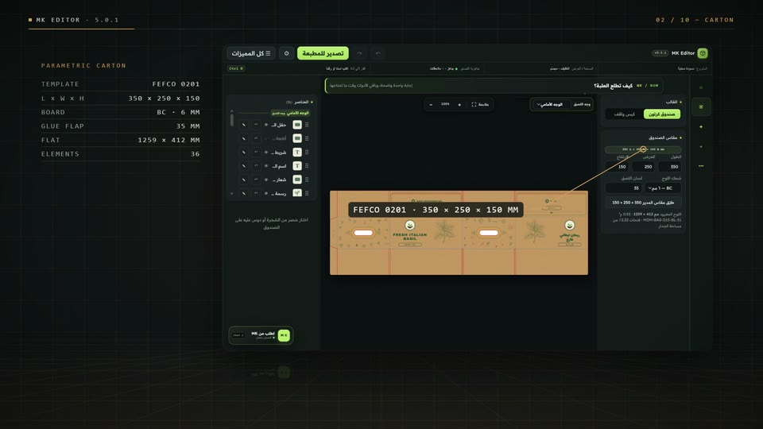
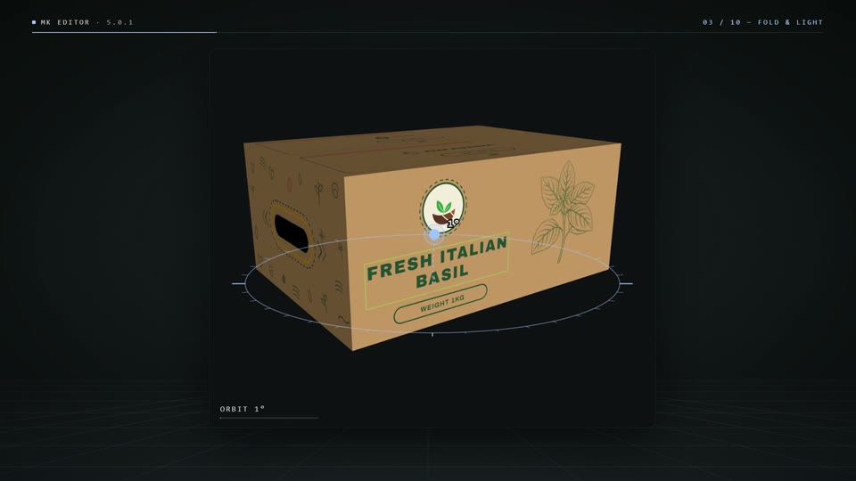
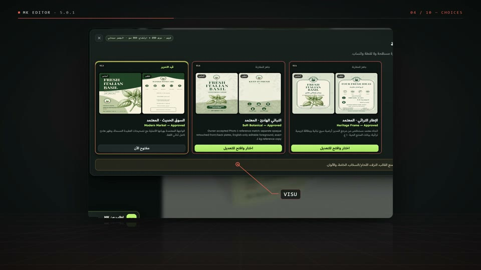
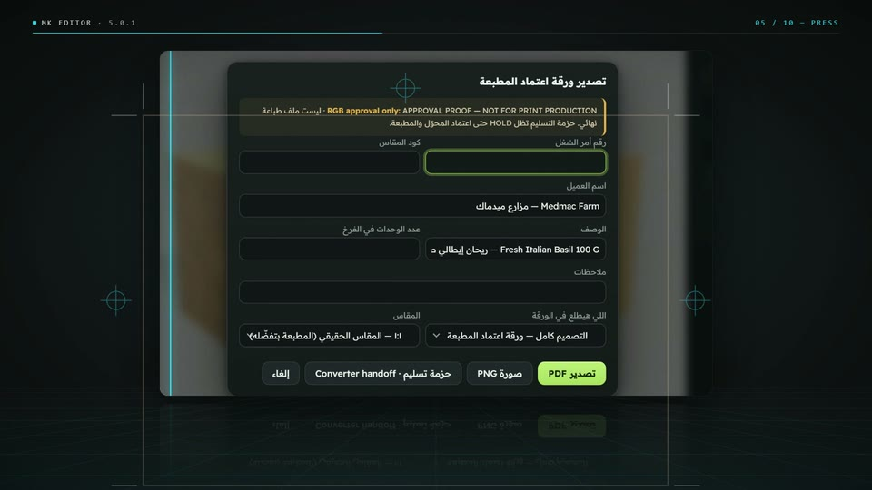
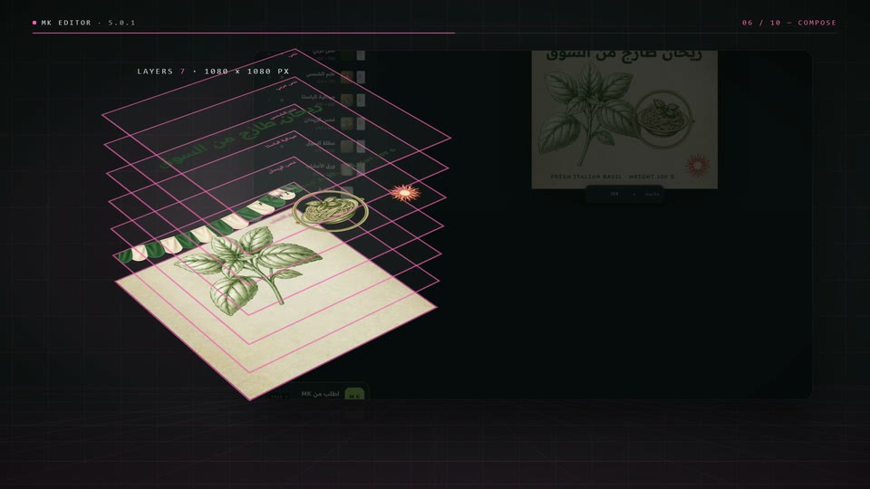
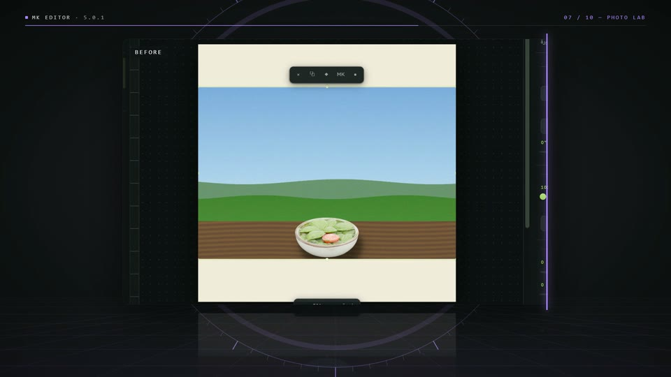
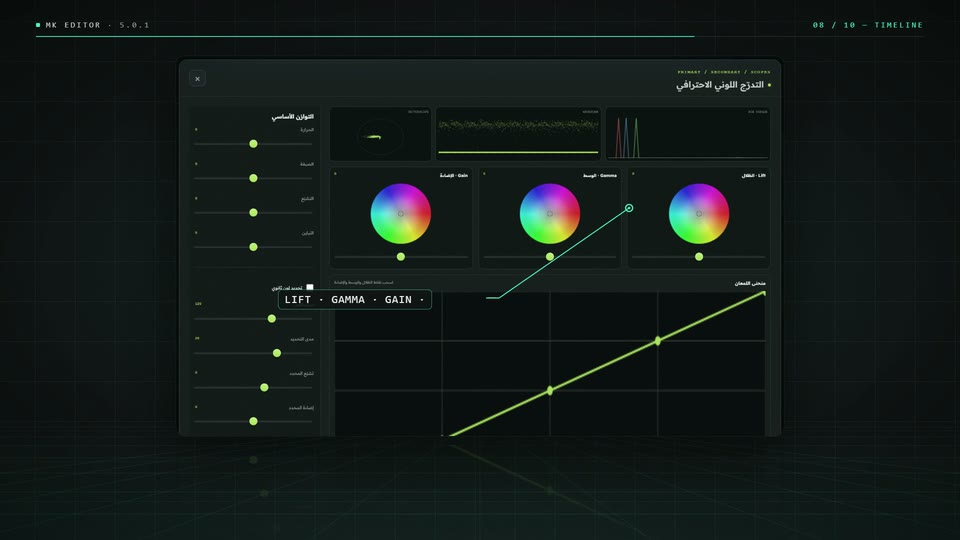
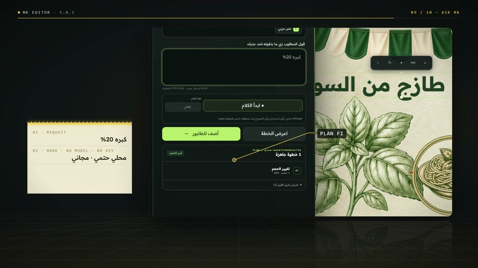
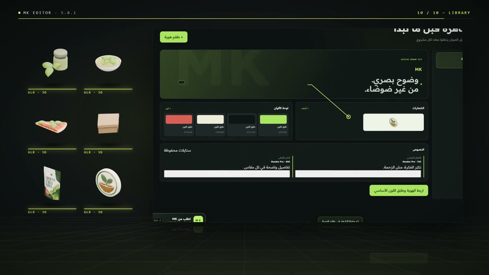

One hall for every craft.
Home opens on the workspace gates, the latest local checkpoint and one search across 157 features.
Home opens on the workspace gates, the latest local checkpoint and one search across 157 features.
A two-minute motion study of MK Editor 5.0.1 filmed from its real interface: parametric packaging, live folding, press approval, image and photo tools, a video timeline and Ask MK.
Home opens on the workspace gates, the latest local checkpoint and one search across 157 features.

A FEFCO 0201 box at 350 × 250 × 150 mm with 36 elements, edited right on the dieline.

The 3D carton is built from the flat panels, turns on a turntable and steps into a lighting studio.

A stand-up pouch, three approved directions side by side and twenty Italian concepts to compare.

A 1:1 press-approval sheet, a separate dieline and a converter package that stays on HOLD.

The image editor stacks real layers and Arabic type, then exports PNG at 2× with transparency.

Nine local tools; here a sky is replaced and an old photo restored with a colour draft.

Clips across V1–V3, colour grading with scopes, chroma key, a four-strip mixer and WebM export.

Ask MK turns a typed or spoken request into a plan you preview, then an applied receipt.

Thirty built-in 3D models, brand kits, original templates and batch processing complete the suite.